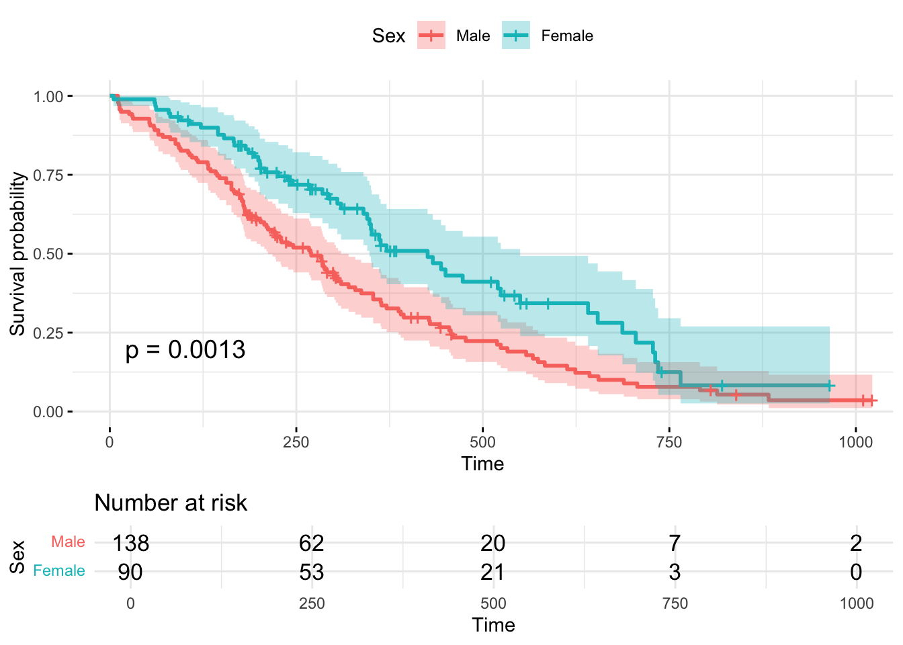

Survival analysis
Intro to Cox Regression
Cox regression is a popular regression modeling method used to predict survival rates given certain covariates.
It assumes that the effects of different variables on the outcome, survival, are constant over time.
“Survival” can refer to the development of a symptom, time to relapse after remission, or as a time to death Walters2012?.
Cox regression model is based on the hazard function \(h_x(t)\) with covariates at time t given by:
\[h_x(t)=h_0(t)\exp(\beta_1x_1 +\beta_2x_2 + \dots + \beta_p x_n) \] \[h_x(t) = hazard \ function\ \] \[h_0(t) = Baseline \ hazard \ function\ \]
\[\beta_1x_1 +\beta_2x_2 + \dots + \beta_p x_n = linear\ combination\ of \ covariates\ and\ their\ coefficients\]
Hazard Ratios and Proportional Hazards
The hazard function is the probability that an individual will experience an event (death) within a certain time interval Walters2012?.
If the risk factor is binary, the result can be interpreted as the estimated increase in HR in patients with the risk factor vs. those without Abd_ElHafeez2021?.
If the risk factor is continuous, the HR is interpreted as an increase/decrease in the hazard rate of death due to a 1 unit increase in the variable Abd_ElHafeez2021?.
The assumption of a constant relationship between dependent and explanatory variables is called proportional hazards.
Testing Proportional Hazards
Graphical strategies to assess proportionality assumption
Kaplan-Meier Survival Distribution \(S(t)\): Plot \(S(t)\) as a function of survival time for each level covariate.
plot the function \(log(-log(S(t)))\) as a function of the log survival time (log represent natural log).
Schoenfeld Residuals
Time-Varying Coefficients
Failing to meet the assumption of proportional hazards means that the effects between dependent and explanatory variables are not constant over time.
Time-varying covariates (coefficients) are used when a covariate changes over time during the follow-up period Zhang2018?.
- Example: The effect of the size of a patient’s tumor on their chances of survival.
Internal time-varying coefficients are affected by survival status and include values that are generated by the subject Zhang2018?.
- A patient’s blood pressure levels during a study on cardiovascular events.
External time-varying coefficients are pre-determined and external to the subject under study Zhang2018?.
- Pollen levels during a study on patients with asthma.